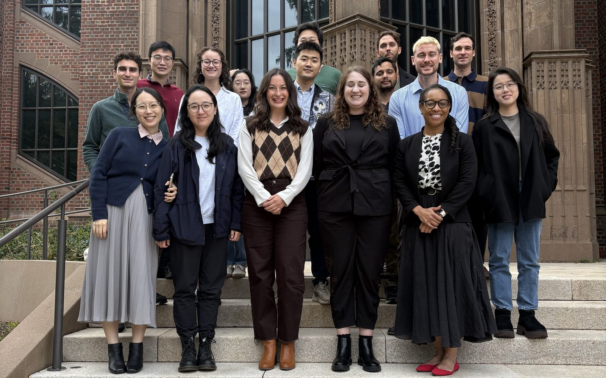

AI⁴Methane Across Scales Workshop

The AI for Natural Methane working group met at Yale for four days to ask how AI can carry methane flux estimates across scales: from microbial and chamber measurements, through eddy-covariance towers and high-resolution satellite imagery, to regional and global budgets.
The workshop was co-organized by Gavin McNicol (University of Illinois Chicago) and Sparkle Malone (Yale School of the Environment), and supported by the Yale Center for Natural Carbon Capture, with continuing support from Spark Climate Solutions. Sessions ran at the Yale Peabody Museum and the Yale Center for Geospatial Solutions, with hybrid links for remote participants. The group left with two data papers in preparation, a Global Change Biology mini-review underway, and three proposals in development.
The week at a glance
Public science
Public seminar and reception at the Peabody, satellite and flux-integration talks, and a demo of the new wetlsp dataset.
Breakouts
wetlsp, interannual variation, the global budget, the Upland Methane Constraint, and chamber synthesis.
Analysis
PlanetScope analyses, wetlsp companion work, and chamber synthesis, with report-backs on leads and data.
Roadmapping
Model–data synthesis and a roadmap for AI-for-methane products and funding.
Highlights
Public seminar and science talks
- AI4NM accomplishments. Youmi Oh (CU Boulder and NOAA) presented harmonization of chamber, remote sensing, model, and microbial data into an AI-ready methane data pool. Licheng Liu (University of Wisconsin–Madison) introduced hybrid AI models that combine process models, field data, and machine learning. Qing Zhu (LBNL) showed multi-decade reconstructions of wetland methane from AmeriFlux sites using knowledge-guided machine learning, with stronger warming-era trends at higher latitudes.
- Satellites and inversions. Lauren Potyk (Harvard) quantified Nigeria's natural and anthropogenic methane with TROPOMI inversions. Lucas Estrada (Harvard) showed a UNet++ emulator of atmospheric transport that runs about 1,500 times faster and stays within 3% of the full model.
- Commercial data access. NASA's Commercial SmallSat Data Acquisition (CSDA) program described its 23 commercial data providers, including new greenhouse-gas providers GHGSat and Satlantis.
- New dataset. Gavin McNicol demonstrated wetlsp, a global wetland surface phenology dataset of 24 phenometric maps for 82 wetland flux sites from PlanetScope imagery (2021–2024), with an explorer app built by computer science students.
Breakouts and analysis
- wetlsp companion analyses. Flux-footprint analysis (the FFP model suited patchy wetland and cropland sites better than fixed cutoffs), comparison against the National Wetland Inventory, and landscape texture analysis. About half of FLUXNET-CH4 site-years overlap with wetlsp.
- Global methane budget. Causal inference across 20 regions and four methane data products found weaker driver links after inversion than in priors.
- Upland Methane Constraint. A new group began a Global Change Biology mini-review testing whether the upland soil methane sink equals the ecosystem-scale upland budget.
- Chamber synthesis (CHARMED). Preliminary representativeness and seasonality analyses for the chamber methane database paper.
- Wetland heterogeneity and AI classification. Etienne Fluet-Chouinard and Jenna Abrahamson (PNNL) presented a framework for wetland fractions within tower footprints. The Clay foundation model separated open water, wetland, and upland at one site with only five training images, and Google AlphaEarth embeddings were tested for unsupervised clustering of wetland sites.
Roadmapping
- Reframing. Participants proposed treating methane as an ecological and energy-flow phenomenon in the Earth system, not only a greenhouse-gas budget term, and flagged lateral carbon transfer from agricultural uplands to wetlands as a major gap.
- Recognition. Shuo Chen (Purdue University) received the Futures Award for leading the first AI⁴Methane synthesis manuscript, and Gavin McNicol the Impact Award for advancing methane upscaling and organizing this scaling/phenology workshop. See the awards →
Products in progress
| Product | Type | Lead(s) |
|---|---|---|
| wetlsp: global wetland surface phenology dataset | Data paper | Gavin McNicol |
| CHARMED: chamber methane database | Data paper | Jesse Rush, Avni Malhotra |
| Global methane budget and causal drivers | Research article | Qing Zhu |
| The Upland Methane Constraint | Global Change Biology mini-review | Sparkle Malone |
| Google AlphaEarth custom embeddings | Data request | Jenna Abrahamson, Qing Zhu |
Proposals are in development for the NSF AI Datasets program, a USGS Powell Center synthesis, and an ESIIL working group.
What's next
The next AI⁴Methane workshop is planned for summer 2027, led by Youmi Oh, with workshop funding from Spark Climate Solutions.
Acknowledgments
We thank the Yale Center for Natural Carbon Capture for funding this workshop, and Spark Climate Solutions for continuing support of the AI for Natural Methane working group. We also thank the Yale Peabody Museum and the Yale Center for Geospatial Solutions for hosting, our invited speakers from Harvard University and NASA Goddard Space Flight Center, and every participant who traveled to New Haven or joined remotely.